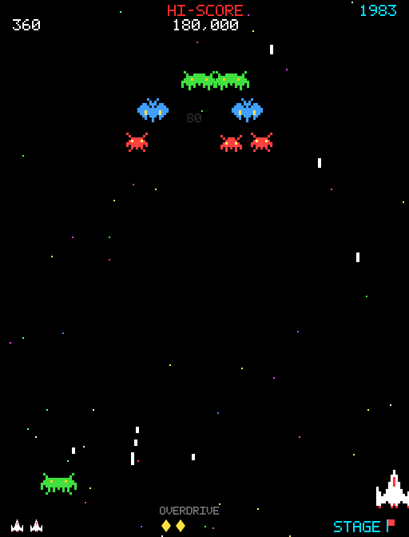
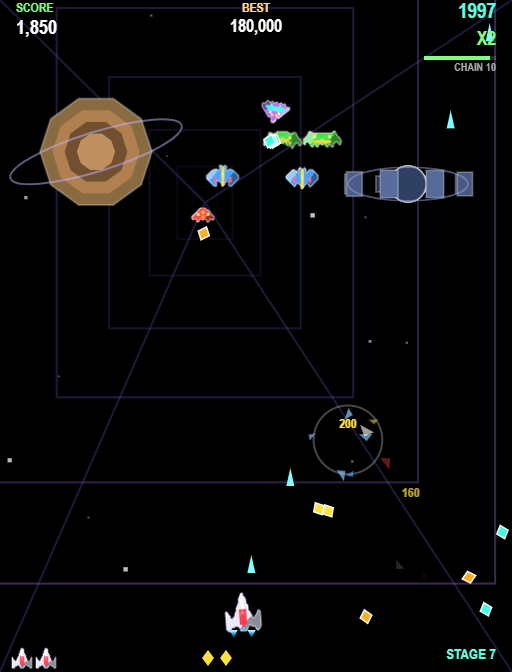
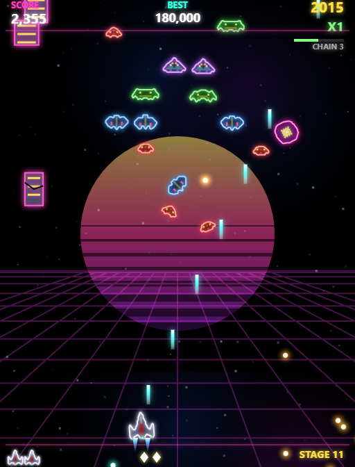
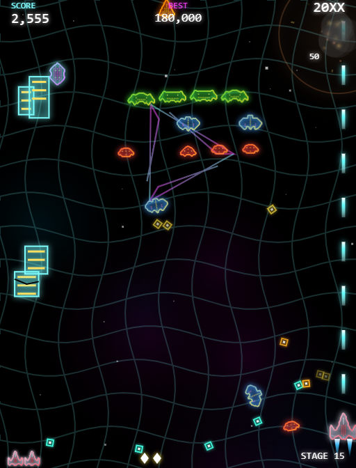

INSERT COIN 198X
Two buttons. Forty years. Play free in your browser.




An arcade shooter that boots as a 1983 cabinet and upgrades its own hardware while you play: 8-bit, 16-bit, early 3D, neon bullet hell and a final generation that was never supposed to exist. Eight eras, eight bosses, one theme re-orchestrated every time. The controls never change.
Play now About the game